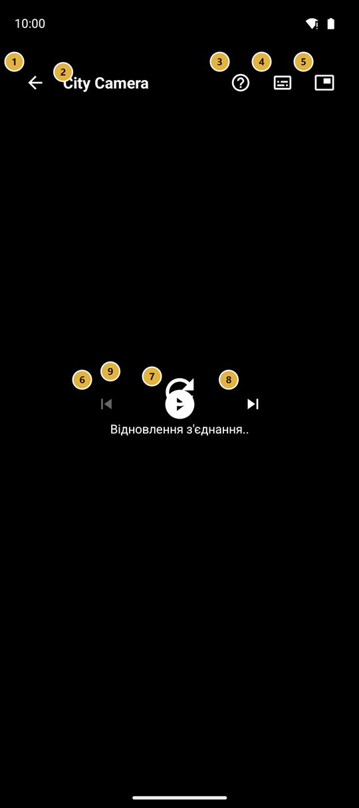

Відеопрогравач
Для чого цей екран
Дивіться відеопотік або камеру на весь екран. Кнопки з'являються, коли ви торкаєтеся картинки, і за кілька секунд ховаються самі.

Порядок дій
- Торкніться картинки, щоб показати кнопки.
- Натисніть «Відтворити» або «Пауза» 7, щоб зупинити й знову запустити потік.
- Переходьте до сусіднього відеоканалу кнопками «Попередній» 6 і «Наступний» 8.
- Відкрийте «Аудіо та субтитри» 4, щоб вибрати мову або ввімкнути субтитри.
- «Картинка в картинці» 5 продовжує показ у маленькому вікні, поки ви користуєтеся іншим застосунком. «Закрити» 1 повертає до списку каналів.
Елементи
1ЗакритиВиходить із програвача.
Зупиняє потік і повертає на екран, звідки ви прийшли. Кнопка «Назад» телефона робить те саме.
- Скасування
- Відкрийте канал знову зі списку.
2Назва каналуНазва каналу.
Та сама назва, що й у списку каналів.
3ДовідкаВідкриває цю сторінку.
Поки сторінка відкрита, потік стоїть на паузі. «Назад» повертає до картинки; натисніть «Відтворити», щоб продовжити.
- Сполучення клавіш
- F1
4Аудіо та субтитриВибирає мову звуку й субтитри.
Перелічує звукові доріжки й доріжки субтитрів, що є в потоці, та пункт «Вимк» для субтитрів. Якщо доріжка одна, вибирати нічого. Вибір запам'ятовується для цього каналу.
- Скасування
- Виберіть попередню доріжку або «Вимк».
5Картинка в картинціПереносить картинку в маленьке вікно.
Вікно лишається поверх інших застосунків, поки ви займаєтеся іншим. Якщо телефон цього не вміє, застосунок повідомляє про це.
- Скасування
- Відкрийте маленьке вікно, щоб повернутися на весь екран.
6Попередній каналКанал перед цим.
Іде вашими відеоканалами. На першому каналі кнопка неактивна.
7ВідтворитиСтавить потік на паузу й відновлює.
Зупиняє картинку й звук; та сама кнопка відновлює їх.
8Наступний каналКанал після цього.
Іде вашими відеоканалами. На останньому каналі кнопка неактивна.
9Буферизація і відновлення з'єднанняПоказує, що триває з'єднання з потоком.
Індикатор зі словами «Буферизація» або «Відновлення з'єднання» з'являється, поки застосунок чекає на дані або пробує потік знову. Застосунок повторює спроби сам; якщо потік мовчить, поверніться й спробуйте інший канал.